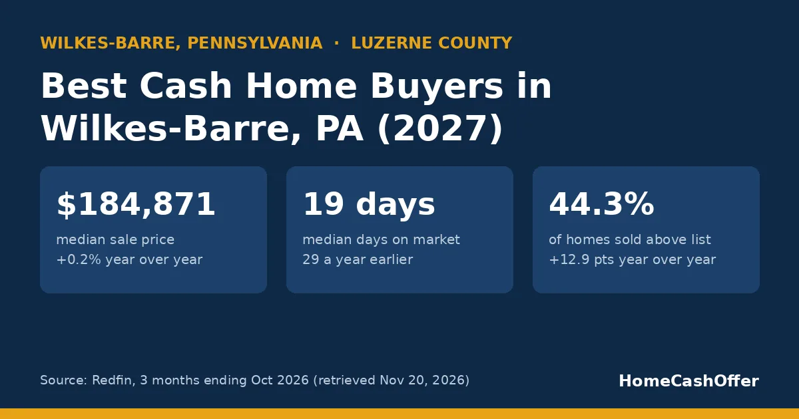
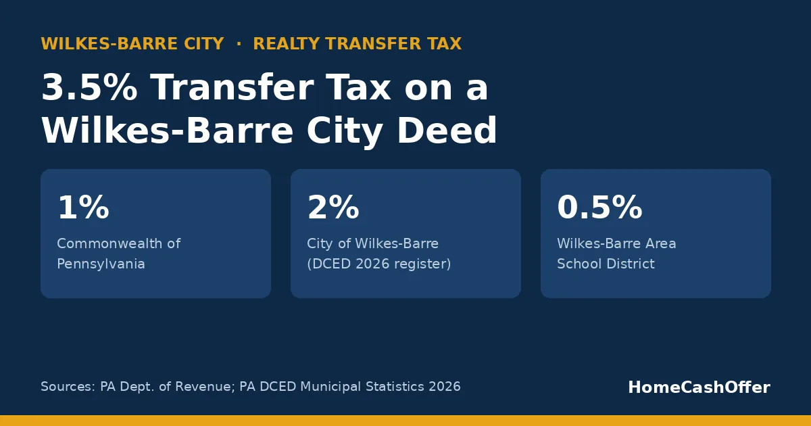

Also: York PA 2027 cash buyers · Philadelphia vacant rowhome guide · Tampa FL 2027 cash buyers
Best Cash Home Buyers in Wilkes-Barre, PA (2027)
Short answer: Wilkes-Barre sellers going into 2027 mostly choose between Northeastern Pennsylvania investors with their own websites (NEPA Cash Offer, Simply Sold, House Buying Solutions and Wilkes-Barre House for Cash) and nationwide as-is buyers such as HomeCashOffer. Two local facts matter more than the headline offer. First, homes in the city are selling fast: Redfin shows a 19-day median. Second, a Wilkes-Barre City deed carries a 3.5% realty transfer tax. So compare net numbers, not just offers.

Wilkes-Barre’s market in five numbers
Redfin’s Wilkes-Barre housing market page covers the three months ending October 2026:
| Measure | Wilkes-Barre (city) | Note |
|---|---|---|
| Median sale price | $184,871 | up 0.2% year over year |
| Median days on market | 19 | 29 a year earlier |
| Homes sold (October) | 107 | 99 a year earlier (up 7.6%) |
| Sale-to-list ratio | 100.3% | up 2.6 pts year over year |
| Homes sold above list | 44.3% | up 12.9 pts year over year |
Redfin gives Wilkes-Barre a Compete Score of 88, “very competitive.” The average home sells about 1% above list and goes pending in around 18 days, and hot homes sell about 6% over list in around 6 days. Nearby Scranton scores 77, with the average home about 1% below list and pending in around 26 days. A tidy double or single in a busy neighborhood will draw buyers. The houses that sit tend to have water in the basement, an old roof, tenants who won’t leave, or an estate that isn’t settled. Those owners are the ones who usually call cash buyers. Redfin’s flood data also says 41% of Wilkes-Barre properties (1,771) are likely to be severely affected by flooding over the next 30 years, which matters for the disclosure section below.
How we put this list together
To be upfront: HomeCashOffer wrote this page, and we’re on the list. Nobody paid to be included. To make the list, a company’s own website had to say it buys houses in Wilkes-Barre. We describe each one using its own claims and link out so you can check. We left out star ratings, review counts and “homes bought” totals we can’t verify. Checked November 20, 2026.
Cash buyers that list Wilkes-Barre
| Company | Type | What its own site says about Wilkes-Barre |
|---|---|---|
| HomeCashOffer | Nationwide as-is cash buyer | Makes written as-is offers on Wilkes-Barre houses, with no commission when you sell to us and a closing date you choose (as little as 7 days when title allows). Closes through a Pennsylvania title company or settlement attorney. Based in Oklahoma City, not Luzerne County. Wilkes-Barre, PA page. |
| NEPA Cash Offer | Family-owned local investor | Says it’s based across the river in Kingston (Pierce St office). It promises a written cash offer within 24 hours and a standard close of about 14 days once title is clear, and says it pays the seller’s closing costs. Buys across Luzerne and Lackawanna counties. |
| Simply Sold | NEPA investor (Simply Sold RE LLC) | Says it makes a cash offer within 24 hours, can close in as little as 7 days and pays the closing costs. It will buy with tenants in place and take over as landlord at closing. Also lists Scranton, Hazleton, Dunmore and Pittston. |
| House Buying Solutions | Family-run NEPA investor | Lists an office on Church St in Archbald (Lackawanna County). Says closings typically take 21 to 30 days, or as little as 7 days with clear title, and that it covers standard closing costs. Buys tenant-occupied and inherited homes. |
| Wilkes-Barre House for Cash | Local cash buyer | Says it gives a written cash offer within 24 hours of the walkthrough, closes most purchases in 7 to 14 days and covers every closing cost. It uses a mobile notary, so you don’t need an office visit. |
Ask every buyer two questions. Will you buy the house yourself, or assign the contract to someone else? Can the written price change after your walkthrough or inspection? Then ask who pays the transfer tax. In Wilkes-Barre that’s a 3.5% line, and “we pay closing costs” doesn’t always include it.
Pennsylvania rules that change the net sheet

- 3.5% realty transfer tax inside the city. Pennsylvania charges 1% of the value on a deed transfer, and the Department of Revenue says grantor and grantee are jointly liable for it. The PA DCED 2026 municipal tax register lists Wilkes-Barre City’s local realty transfer tax at 2% for the city plus 0.5% for the Wilkes-Barre Area School District. That’s 3.5% in total, or about $6,470 at the $184,871 median (our arithmetic). Who pays which share is negotiable, so get it in writing. Outside the city, rates depend on the township or borough.
- The seller disclosure form. A seller of residential property has to give the buyer a signed and dated property disclosure statement listing known material defects before the agreement of sale is signed (68 Pa.C.S. § 7303). Selling as-is or for cash doesn’t remove that duty, and the seller must not fail to disclose a known material defect (§ 7308). A buyer harmed by a willful or negligent violation can sue for actual damages within two years after settlement (§ 7311).
- Estate sales are exempt from the form. Transfers by a fiduciary in the course of administering a decedent’s estate, guardianship, conservatorship or trust are excepted from the disclosure chapter (§ 7302(a)(1)). That helps an executor selling a parent’s Wilkes-Barre house they never lived in. Any known defect still shouldn’t be hidden.
- New flood notice. Section 7305.2, added in October 2026, says that once the Insurance Department posts its flood information online, sellers must give buyers a written “Important information on flood insurance” notice. It goes with the disclosure form or in addition to it. With Redfin putting 41% of city properties at severe flood risk, expect buyers in Wilkes-Barre to read that page closely.
- Mortgage-rate backdrop. Freddie Mac’s PMMS put the 30-year fixed rate at 7.28% for the week of November 19, 2026 (15-year: 6.66%), up from 6.26% a year earlier.
When a Wilkes-Barre seller should skip the cash buyers
- Your house is in decent shape and you can wait a few weeks. At 100.3% of list and a 19-day median, a well-priced agent listing will usually net more, even after commission and the 3.5% transfer tax.
- One repair would let a financed buyer get a loan. If fixing a leaking roof or a failed sewer line would get an FHA or conventional buyer approved, the repair may pay for itself.
- You haven’t priced it yet. Get an agent’s opinion before you take a cash number, so you know what you’re giving up for speed.
A cash sale makes more sense if the house needs work you won’t take on, tenants are staying, it’s an inherited house still in Luzerne County probate, taxes or liens are behind, you live out of state, or you’re on a deadline. For estate timing, see our probate timeline by state.
How HomeCashOffer buys in Wilkes-Barre
Send us the address, some photos or a video walkthrough, and the date you’d like to close. We’ll send a written as-is number with no repair list and no commission. A Pennsylvania title company or settlement attorney handles the closing and records the deed with the Luzerne County Recorder of Deeds. Compare our offer with the others on this page, and if someone beats it, take theirs. Call (405) 622-8705, or request an offer on our Wilkes-Barre, PA cash offer page. Nearby: Scranton and Hazleton. For the rest of the state, see our Pennsylvania seller hub. Nationwide 2027 roundup: best cash home buyers 2027.
HomeCashOffer is not a law firm and this isn’t legal advice. Talk to a licensed attorney in your state about your situation. Market and flood-risk figures are from Redfin’s Wilkes-Barre page (redfin.com/city/20852/PA/Wilkes-Barre/housing-market), retrieved November 20, 2026. Transfer-tax rates are from the PA Department of Revenue and the PA DCED 2026 municipal tax register (Luzerne County, Wilkes Barre City / Wilkes-Barre Area SD). Statutes are from Title 68, Chapter 73 of the Pennsylvania Consolidated Statutes (palegis.us). Mortgage rates are from Freddie Mac’s PMMS. Company descriptions are from each company’s own website, checked the same day.